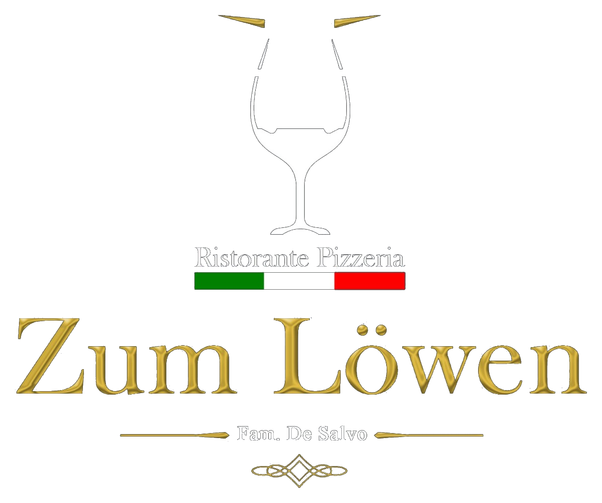

Ristorante Pizzeria
Zum Löwen
Lieber beim Löwen essen, als vom Löwen gefressen

Lieber beim Löwen essen, als vom Löwen gefressen

Der Schutz Ihrer persönlichen Daten ist uns wichtig. Diese Datenschutzerklärung informiert Sie darüber, welche personenbezogenen Daten beim Besuch unserer Webseite verarbeitet werden und zu welchem Zweck dies geschieht.
Verantwortlich für die Datenverarbeitung auf dieser Webseite ist:
Rocco De Salvo
Ristorante Pizzeria Zum Löwen
Hauptstraße 17
36289 Friedewald
Deutschland
Telefon: 06674 922255
E-Mail: ristorantezumloewen@web.de
Beim Aufrufen unserer Webseite werden durch den Webserver automatisch Informationen erfasst. Dazu können insbesondere folgende Daten gehören:
Diese Daten werden verarbeitet, um die Webseite technisch bereitzustellen, die Stabilität und Sicherheit zu gewährleisten und Fehler analysieren zu können.
Diese Webseite wird über GitHub Pages bereitgestellt. Anbieter ist GitHub, Inc., 88 Colin P. Kelly Jr. Street, San Francisco, CA 94107, USA.
Beim Besuch dieser Webseite können durch GitHub technische Zugriffsdaten verarbeitet werden. Dazu können insbesondere die IP-Adresse, Datum und Uhrzeit des Zugriffs, aufgerufene Seiten, Browser- und Geräteinformationen sowie Referrer-Informationen gehören.
Die Verarbeitung dieser Daten erfolgt zur technischen Bereitstellung der Webseite sowie zur Sicherheit, Stabilität und Fehleranalyse des Angebots.
Weitere Informationen zur Datenverarbeitung durch GitHub finden Sie in der Datenschutzerklärung von GitHub: GitHub Privacy Statement
Wenn Sie uns per Telefon oder E-Mail kontaktieren, verarbeiten wir die von Ihnen mitgeteilten Daten, zum Beispiel Name, Telefonnummer, E-Mail-Adresse und Inhalt Ihrer Anfrage. Die Verarbeitung erfolgt, um Ihre Anfrage zu beantworten oder eine Reservierung zu bearbeiten.
Unsere Webseite bindet eine Karte von Google Maps ein, um Ihnen unseren Standort anzeigen zu können. Anbieter ist Google Ireland Limited, Gordon House, Barrow Street, Dublin 4, Irland.
Beim Laden der Google-Maps-Karte können personenbezogene Daten, insbesondere Ihre IP-Adresse, an Google übermittelt werden. Es kann auch zu einer Übermittlung von Daten an Google LLC in den USA kommen.
Wenn Sie die Datenübermittlung an Google vermeiden möchten, nutzen Sie bitte nicht die eingebettete Karte. Alternativ können Sie unsere Adresse manuell in einem Kartendienst Ihrer Wahl eingeben.
Unsere Webseite enthält Links zu unseren Profilen bei Facebook und Instagram. Beim bloßen Besuch unserer Webseite werden dadurch keine Daten an diese Anbieter übertragen, sofern keine eingebetteten Social-Media-Plugins verwendet werden. Erst wenn Sie einen der Links anklicken, verlassen Sie unsere Webseite und es gelten die Datenschutzbestimmungen des jeweiligen Anbieters.
Unsere Webseite verwendet derzeit keine eigenen Tracking-Cookies. Drittanbieter-Dienste wie Google Maps können jedoch Cookies oder ähnliche Technologien einsetzen, sobald deren Inhalte geladen werden.
Sie haben im Rahmen der gesetzlichen Bestimmungen insbesondere das Recht auf Auskunft über Ihre gespeicherten personenbezogenen Daten, Berichtigung unrichtiger Daten, Löschung, Einschränkung der Verarbeitung, Widerspruch gegen die Verarbeitung sowie Datenübertragbarkeit.
Sie haben das Recht, sich bei einer Datenschutzaufsichtsbehörde zu beschweren, wenn Sie der Ansicht sind, dass die Verarbeitung Ihrer personenbezogenen Daten gegen datenschutzrechtliche Vorschriften verstößt.
Diese Datenschutzerklärung ist aktuell gültig und hat den Stand: Juni 2026.